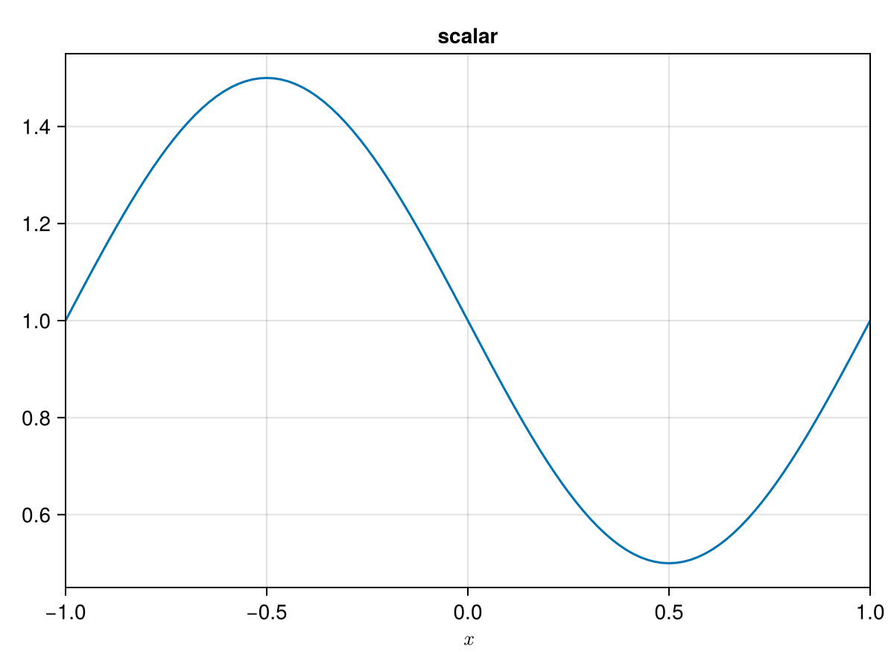
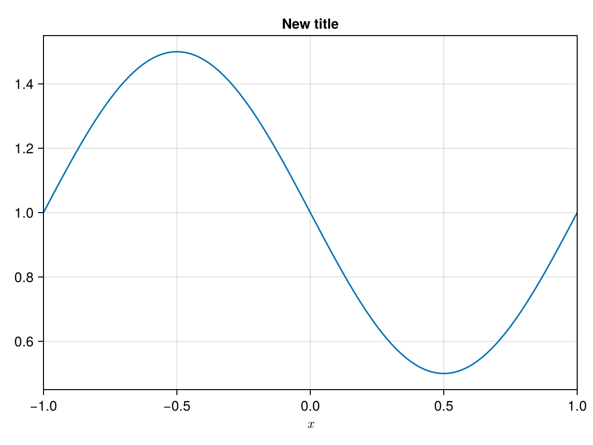
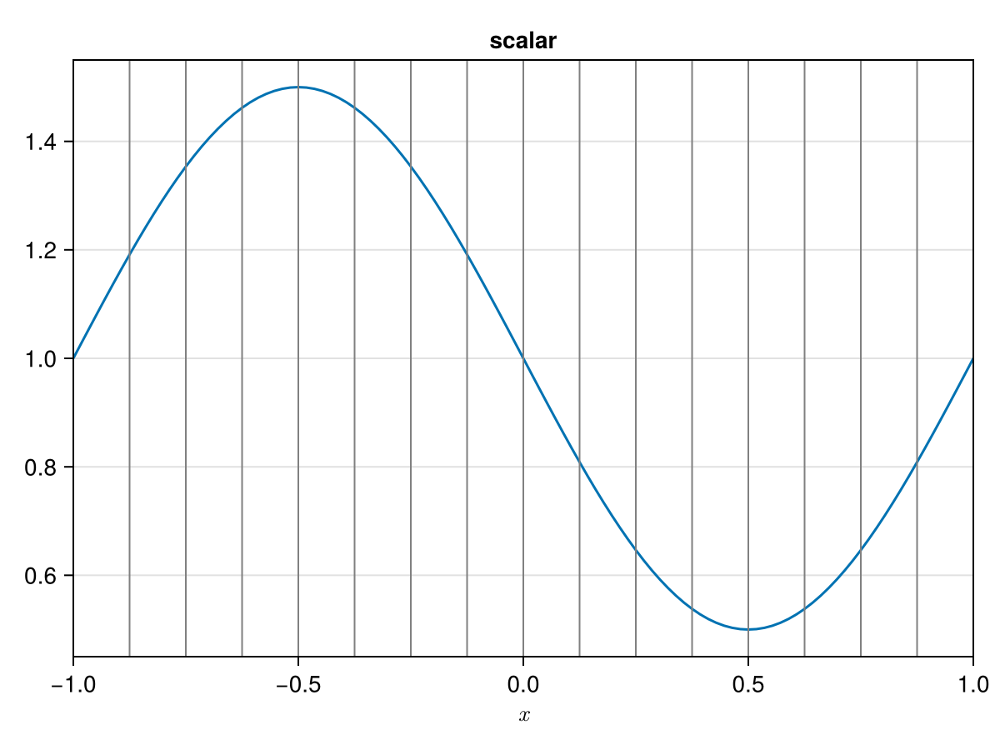
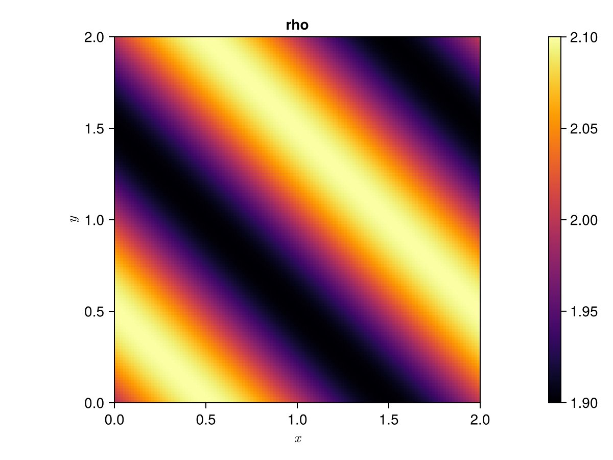
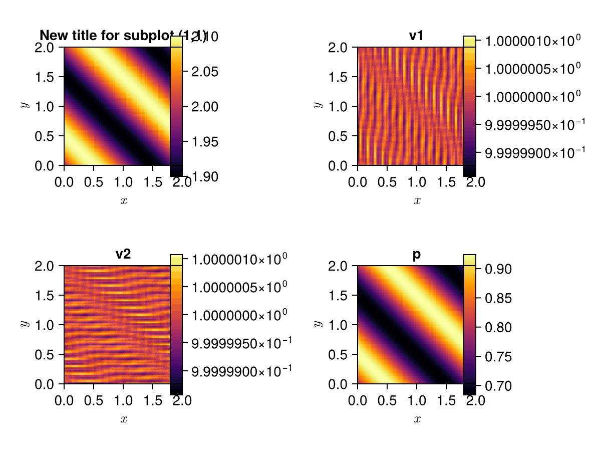

Visualization
There are two possible approaches to visualize results from Trixi.jl: either directly from the REPL using Plots.jl or with ParaView/VisIt by postprocessing Trixi.jl's output files with Trixi2Vtk.
Plots.jl [experimental]
By far the easiest and most convenient plotting approach is to use the powerful Plots.jl package to directly visualize Trixi.jl's results from the REPL. In the following, you will find more information on a number of topics for how to use Plots.jl together with Trixi.jl:
- Getting started
- Customizing plot results via a PlotData2D object
- Plotting a 3D solution as a 2D plot
- Creating a 1D plot
- Plotting a 2D or 3D solutions as a 1D plot
- Visualizing results during a simulation
Plotting via Plots.jl is still considered an experimental feature and might change in any future releases.
Getting started
After running a simulation with Trixi.jl in the REPL, load the Plots package with
julia> using PlotsTo visualize the solution, execute
julia> plot(sol)Here we assume that sol holds the return value of the solve(...) method (with type SciMLBase.ODESolution), which is the default variable name when you use one of the example elixirs. This will generate a grid layout with one subplot for each solution variable, convenient for getting an overview of the current solution:

You can save the resulting file as a PNG image file by calling savefig(...) with an output file name that ends in .png, e.g.,
julia> savefig("solution-overview.png")In Trixi.jl, two plot types are available: 2D heatmap plots and 1D line plots. If you use plot(sol), Trixi.jl will automatically choose the plot type that fits the dimensions of the sol input: 2D/3D data will be visualized as a heatmap, 1D data as a line plot. For more fine-grained control over what to plot, you can create such an object yourself, which can either be a PlotData2D or a PlotData1D object. For further details on both of these see below:
Customizing plot results via a PlotData2D object
For more fine-grained control over what to plot, first create a PlotData2D object by executing
julia> pd = PlotData2D(sol)julia> pd = PlotData2D(u, semi)where u is an array containing the solution and semi is the semidiscretization. For example, if PlotData2D(sol.u[2], semi) is specified, this will create a PlotData2D instance from the 2nd saved time-step. If PlotData2D(sol(0.5), semi) is specified, it will construct a PlotData2D instance using OrdinaryDiffEq.jl's interpolation to evaluate the solution at time t = 0.5.
This takes the results generated by Trixi.jl and stores them in a data format that can be understood by the Plots package, and pd holds all data relevant for plotting sol. You can pass variable names as strings to pd using a dictionary-like syntax, e.g.,
julia> plot(pd["rho"])This will create a single 2D heatmap plot of the variable rho:

The default plot type and style can be overridden by passing any additional arguments that are understood by the Plots package. For example, to change the color scheme and add names to the axes, modify the previous command to
julia> plot(pd["rho"], seriescolor = :heat, xguide = "x", yguide = "y")to yield

For more details on the various format options for plot, please consult the Plots documentation.
In addition, you can plot the mesh lines on top of the solution variables by calling the getmesh(...) function on the PlotData2D object
julia> plot!(getmesh(pd)) # here we use `plot!` with an `!` to add to the previous plotwhich modifies the previous plot to

By default, PlotData2D will convert the conserved variables to primitive variables, but this can be changed by passing an appropriate conversion function in the solution_variables keyword argument, similar to the behavior of the SaveSolutionCallback:
julia> pd = PlotData2D(sol; solution_variables = cons2cons) # Plot conservative variablesThere are several other keyword arguments that influence how the solution data is processed for visualization with the Plots package. A detailed explanation can be found in the docstring of the PlotData2D constructor.
Another way to change the appearance of a plot is to convert the solution to a uniformly refined mesh before plotting. This can be helpful, e.g., when trying different settings for a simulation with adaptive mesh refinement, where one would like to ignore the mesh changes when comparing solutions. This is achieved with adapt_to_mesh_level, which uses the mesh adaptation routines to adapt the solution to a uniform grid. For example, the AMR solution from above could be preprocessed with
julia> pd = PlotData2D(adapt_to_mesh_level(sol, 4)...)When plotted together with the mesh, this will yield the following visualization:

Plotting a user-defined scalar field
To plot a scalar quantity, one can call plot(ScalarPlotData2D(u, semi)), where u is an array of nodal values of the scalar field to plot. The layout of u should match the layout of the x and y nodal coordinates of the respective solver. For example, after running trixi_include(joinpath("examples", "unstructured_2d_dgsem", "elixir_euler_wall_bc.jl")), the following can be used to plot the function f(x, y) = x * y:
x = view(semi.cache.elements.node_coordinates, 1, :, :, :)y = view(semi.cache.elements.node_coordinates, 2, :, :, :)plot(ScalarPlotData2D(x .* y, semi))This produces the following plot:

This routine can be used to visualize scalar quantities which depend on the solution, such as the norm of a velocity vector or two-dimensional vorticity. For example, we can visualize vorticity for a compressible version of the Brown-Minion vortex problem:
julia> using Trixi, Plotsjulia> redirect_stdout(devnull) do # runs the elixir without any output from callbacks etc. trixi_include(@__MODULE__, joinpath(examples_dir(), "dgmulti_2d", "elixir_euler_brown_minion_vortex.jl")) end;[ Info: You just called `trixi_include`. Julia may now compile the code, please be patient.julia> function compute_vorticity(velocity, mesh, equations::CompressibleEulerEquations2D, dg::DGMulti, cache) rd = dg.basis md = mesh.md @unpack Dr, Ds = rd @unpack rxJ, sxJ, ryJ, syJ, J = md v1, v2 = velocity dv1dy = ryJ .* (Dr * v1) + syJ .* (Ds * v1) dv2dx = rxJ .* (Dr * v2) + sxJ .* (Ds * v2) return dv2dx - dv1dy end;julia> compute_vorticity(velocity, semi) = compute_vorticity(velocity, Trixi.mesh_equations_solver_cache(semi)...);julia> function get_velocity(sol) rho, rhou, rhov, E = StructArrays.components(Base.parent(sol.u[end])) v1 = rhou ./ rho v2 = rhov ./ rho return v1, v2 end;julia> vorticity = compute_vorticity(get_velocity(sol), semi);julia> plot(ScalarPlotData2D(vorticity, semi; variable_name = "Vorticity at t = $(sol.prob.tspan[end])"))Plot{Plots.GRBackend() n=1}This produces the following plot of vorticity.

Since the mesh is fairly coarse, we observe numerical artifacts due to the low resolution. These errors vanish under mesh refinement; for example, doubling the mesh resolution by running
julia> trixi_include(joinpath(examples_dir(), "dgmulti_2d", "elixir_euler_BM_vortex.jl"), cells_per_dimension = 32)yields the following plot of vorticity:

When visualizing a scalar field, the plotted solution is reinterpolated using a high order polynomial approximation. Thus, small discrepancies may be observed when the underlying data is highly non-smooth or under-resolved.
ScalarPlotData2D objects can also be used with Makie through iplot. For example, the following code plots two surfaces:
julia> using Trixi, CairoMakiejulia> redirect_stdout(devnull) do # runs the elixir without any output from callbacks etc. trixi_include(@__MODULE__, joinpath(examples_dir(), "unstructured_2d_dgsem", "elixir_euler_wall_bc.jl")) end;[ Info: You just called `trixi_include`. Julia may now compile the code, please be patient.julia> x = view(semi.cache.elements.node_coordinates, 1, :, :, :); # extracts the node x coordinatesjulia> y = view(semi.cache.elements.node_coordinates, 2, :, :, :); # extracts the node y coordinatesjulia> fig_ax_plt = iplot(ScalarPlotData2D((@. 1 - .25*(x^2 + y^2)), semi), plot_mesh=true, colormap=:viridis);julia> fig_ax_plt2 = iplot!(fig_ax_plt, ScalarPlotData2D((@. .125*(x+y)), semi), plot_mesh=true, colormap=:blues)FigureAxisPlot()This creates the following plot:

Plotting a 3D solution as a 2D plot
It is possible to plot 2D slices from 3D simulation data using the TreeMesh with the same commands as above:
julia> plot(sol) # `sol` is from a 3D simulationBy default, plotting sol or creating a PlotData2D object from a 3D simulation will create a 2D slice of the solution in the xy-plane. You can customize this behavior by explicitly creating a PlotData2D object and passing appropriate keyword arguments:
slicespecifies the plane which is being sliced and can be:xy,:xz, or:yz(default::xy)pointspecifies a three-dimensional point. The sliced plane is then created such that it lies on the point (default:(0.0, 0.0, 0.0)).
All other attributes for PlotData2D objects apply here as well.
For example, to plot the velocity field orthogonal to the yz-plane at different x-axis locations, you can execute
julia> trixi_include(joinpath(examples_dir(), "tree_3d_dgsem", "elixir_euler_taylor_green_vortex.jl"), tspan=(0.0, 1.0))[...]julia> plots = []Any[]julia> for x in range(0, stop=pi/2, length=6) pd = PlotData2D(sol, slice=:yz, point=(x, 0.0, 0.0)) push!(plots, plot(pd["v1"], clims=(-1,1), title="x = "*string(round(x, digits=2)))) endjulia> plot(plots..., layout=(2, 3), size=(750,350))which results in a 2x3 grid of slices of the yz-plane:

Creating a 1D plot
When plotting a 1D solution with
julia> plot(sol) # `sol` is from a 1D simulationTrixi.jl automatically creates a PlotData1D object and visualizes it as a line plot: 
To customize your 1D plot, you can create a PlotData1D object manually as follows:
julia> pd = PlotData1D(sol)julia> pd = PlotData1D(u, semi)julia> pd = PlotData1D((x, equations) -> initial_condition(x, last(tspan), equations), semi)If you pass some data u and a semidiscretization semi, u can either be an array, e.g., obtained by sol.u[end] or a function taking a one-element SVector x representing the spatial variable and the equations. The latter option can be useful, e.g., for plotting an analytical solution. The behavior of a PlotData1D is analogous to the PlotData2D behavior.
In a very similar fashion to PlotData2D, you can customize your plot:
plot(pd)creates the same plot as inplot(sol).plot(pd["rho", "p"])only plots specific variables. In this caserhoandp.plot!(getmesh(pd))adds mesh lines after creating a plot.- Any attributes from Plots can be used, e.g.,
plot(pd, yguide=:temperature). pd = PlotData1D(adapt_to_mesh_level(sol, 4)...)adapts the mesh before plotting (in this example to a mesh with refinement level 4).
You can also customize the PlotData1D object itself by passing attributes to the PlotData1D constructor:
solution_variablesspecifies the variables to be plotted.nvisnodessets the amount of nodes per element which the solution then is interpolated on.reinterpolatespecifies whether or not the data should be reinterpolated to a homogeneous grid or not.
Plotting a 2D or 3D solutions as a 1D plot
It is possible to extract a straight, axis-parallel line from a 2D or 3D solution and visualize it as a 1D plot. This is done by creating a PlotData1D object with a 2D/3D solution sol as input:
julia> pd = PlotData1D(sol)The plot is then created with:
julia> plot(pd)By default the x-axis is extracted, which can be changed with following attributes:
slicespecifies the axis which is being extracted and can be:x,:yor:z(:zis only for 3D input and default is:x)pointspecifies a two or three dimensional point. The sliced axis is then created in such a way, that it lies on the point. (default:(0.0, 0.0)or(0.0, 0.0, 0.0))
All other attributes for PlotData1D objects apply here as well.
In the following, is an example for a 2D simulation of the linear scalar advection equation. First, we have the regular 2D heatmap plot:

From this, we can extract a line plot parallel to the y-axis going through the point (1.0, 0.0) with the following commands:
julia> pd = PlotData1D(sol, slice=:y, point=(1.0, 0.0))julia> plot(pd)
This convenient method of slicing is limited to axis-parallel slices, but for 2D/3D solutions it is also possible to create a plot along any curve you want. To do so, you first need to create a list of 2D/3D points that define your curve. Then you can create a PlotData1D with the keyword argument curve set to your list.
Let's give an example of this with the basic advection equation from above by creating a plot along the circle marked in green:

We can write a function like this, that outputs a list of points on a circle:
function circle(radius, center, n_points) coordinates = zeros(2, n_points) for i in 1:n_points coordinates[:,i] = radius*[cospi(2*i/n_points), sinpi(2*i/n_points)] .+ center end return coordinatesendThen create and plot a PlotData1D object along a circle with radius one, center at (1,1), and 100 points:
pd = PlotData1D(sol, curve=circle(1.0, (1.0, 1.0), 100))plot(pd)This gives you the following plot: 
Creating a plot like this has its downsides. For one, it is unclear what to put on the abscissa of the plot. By default, the arc length of the given curve is used. Also, with this way of plotting you lose the ability to use a mesh plot from getmesh.
Visualizing results during a simulation
To visualize solutions while a simulation is still running (also known as in-situ visualization), you can use the VisualizationCallback. It is created as a regular callback and accepts upon creation a number of keyword arguments that allow, e.g., to control the visualization interval, to specify the variables to plot, or to customize the plotting style.
During the simulation, the visualization callback creates and displays visualizations of the current solution in regular intervals. This can be useful to, e.g., monitor the validity of a long-running simulation or for illustrative purposes. An example for how to create a VisualizationCallback can be found in examples/tree_2d_dgsem/elixir_advection_amr_visualization.jl:
[...]# Enable in-situ visualization with a new plot generated every 20 time steps# and additional plotting options passed as keyword argumentsvisualization = VisualizationCallback(semi; interval = 20, clims = (0, 1))[...]The resulting output of the referenced elixir can be seen in the embedded video below:
Trixi2Vtk
Trixi2Vtk converts Trixi.jl's .h5 output files to VTK files, which can be read by ParaView, VisIt, and other visualization tools. It automatically interpolates solution data from the original quadrature node locations to equidistant visualization nodes at a higher resolution, to make up for the loss of accuracy from going from a high-order polynomial representation to a piecewise constant representation in VTK.
In the Julia REPL, first load the package Trixi2Vtk
julia> using Trixi2VtkTo process an HDF5 file generated by Trixi.jl, execute
julia> trixi2vtk(joinpath("out", "solution_000000000.h5"), output_directory="out")This will create two unstructured VTK files in the out subdirectory that can be opened with ParaView or VisIt: solution_000000000.vtu contains the discontinuous Galerkin solution data while solution_000000000_celldata.vtu holds any cell-based values such as the current AMR indicator or the cell refinement level.

This allows you to generate VTK files for solution, restart and mesh files. By default, Trixi2Vtk generates .vtu (unstructured VTK) files for both cell/element data (e.g., cell ids, element ids) and node data (e.g., solution variables). This format visualizes each cell with the same number of nodes, independent of its size. Alternatively, you can provide format=:vti as a keyword argument to trixi2vtk, which causes Trixi2Vtk to generate .vti (image data VTK) files for the solution files, while still using .vtu files for cell-/element-based data. In .vti files, a uniform resolution is used throughout the entire domain, resulting in different number of visualization nodes for each element. This can be advantageous to create publication-quality images, but increases the file size.
If you want to convert multiple solution/restart files at once, you can just supply multiple input files as the positional arguments to trixi2vtk, e.g.,
julia> trixi2vtk("out/solution_000000000.h5", "out/solution_000000040.h5")You may also use file globbing to select a range of files based on filename patterns, e.g.,
julia> trixi2vtk("out/solution_*.h5")to convert all solution files in the out/ directory or
julia> trixi2vtk("out/restart_00[0-9]000.h5")to convert every one-thousandth restart file (out/restart_000000000.h5, out/restart_001000.h5 etc.).
When multiple solution/restart files are provided, Trixi2Vtk will also generate a .pvd file, which allows ParaView to read all .vtu/.vti files at once and which uses the time attribute in solution/restart files to inform ParaView about the solution time. A comprehensive list of all possible arguments for trixi2vtk can be found in the Trixi2Vtk.jl API.
Further information regarding the development of Trixi2Vtk can be found in the development section.
Makie.jl [experimental]
In addition to Plots.jl support, Trixi.jl includes visualization utilities through Makie.jl. Trixi.jl provides Makie-based visualization options for 1D line plots and 2D heatmap-type plots (similar to the Plots.jl recipes), as well as interactive surface plots via iplot for all supported 2D mesh types.
Plotting via Makie.jl is still considered an experimental feature and might change in any future releases.
To use Makie-based visualization, load CairoMakie.jl for static plots or GLMakie.jl for interactive use:
julia> using CairoMakieBoth Makie.jl and Plots.jl export plot, so if you load both libraries, you will have to specify which plot function to call via Plots.plot or Makie.plot.
Trixi.jl's Makie support provides two interface levels:
- High-level:
plot/plot!automatically selects the correct plot type, adds axis labels, colorbars, and respects theplot_meshkeyword. - Low-level: for custom axis setups, use
lines!(1D),heatmap!(2D, Cartesian), ortrixiheatmap!(2D, non-Cartesian).
1D visualization
After running a 1D simulation, visualize the solution with
using Trixi, CairoMakieredirect_stdout(devnull) do trixi_include(@__MODULE__, joinpath(examples_dir(), "tree_1d_dgsem", "elixir_advection_basic.jl"))endpd = PlotData1D(sol)plot(pd["scalar"])
The figure can be customized with any attributes from Makie:
fig, axes = plot(pd)axes[1, 1].title = "New title"fig
With mesh lines overlaid:
plot(pd["scalar"])plot!(getmesh(pd))Makie.VLines{Tuple{Vector{Float64}}}Alternatively, you can also pass the keyword argument plot_mesh = true:
plot(pd["scalar"], plot_mesh = true)
2D visualization
After running a 2D simulation, visualize a single variable with
using Trixi, CairoMakieredirect_stdout(devnull) do trixi_include(@__MODULE__, joinpath(examples_dir(), "tree_2d_dgsem", "elixir_euler_source_terms.jl"))endpd = PlotData2D(sol)plot(pd["rho"])
All variables at once:
fig, axes = plot(pd)axes[1, 1].title = "New title for subplot (1,1)"fig
With mesh overlay:
plot(pd, plot_mesh = true)Note that plot!(getmesh(pd)) only plots the mesh in the currently active axis, e.g.,
plot(pd)plot!(getmesh(pd))Makie.Lines{Tuple{Vector{GeometryBasics.Point{2, Float64}}}}A key advantage of Makie.jl over Plots.jl is the ability to compose plots on a custom axis, for example to set custom titles, labels, or to place colorbars manually:
fig = Figure()ax = Axis(fig[1, 1], title = "Density", xlabel = "x", ylabel = "y", aspect = DataAspect())plt = plot!(ax, pd["rho"], colormap = :berlin)Colorbar(fig[1, 2], plt)plot!(getmesh(pd))Makie.Lines{Tuple{Vector{GeometryBasics.Point{2, Float64}}}}Interactive visualization
Trixi.jl also supports interactive surface plots using iplot. This requires GLMakie.jl:
julia> using GLMakieAfter executing
julia> trixi_include(joinpath("examples", "unstructured_2d_dgsem", "elixir_euler_wall_bc.jl"))we can run
julia> iplot(sol)This will open up an interactive visualization window:

The plot can be rotated (click and hold), zoomed in and out (scroll up and down), and panned (hold right click and drag). Two toggle buttons control whether mesh lines are visible on top of and below the solution.
Both plot and iplot use colormap = :inferno by default. A different colormap can be selected by providing an appropriate keyword argument. For example, plot(sol, colormap=:blues) and iplot(sol, colormap=:blues) produce the following figures: